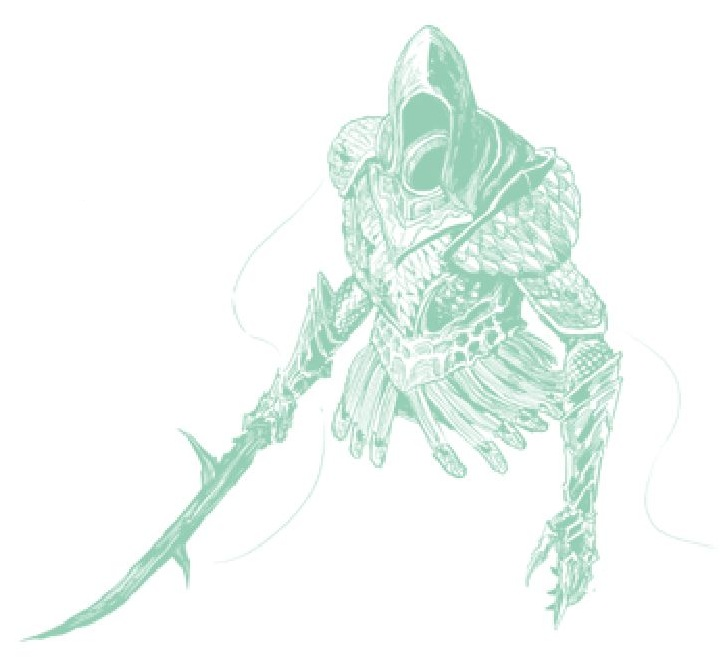

Por exemplo, os Corníferos (Hornsent) de Belurat, uma cultura inteira que floresceu no tempo do Crisol, representa o Crisol como uma árvore espiral. O Selo da Árvore Espiral diz:
“Selo sagrado de âmbar sujo gravado com um design de árvore espiral... A majestade da torre branca, estendendo-se para alcançar os deuses, até inspirou uma fé secreta nos invasores, o povo da Térvore.”
- Selo da Árvore EspiralTorna-se claro que o que é importante aqui não é a árvore, mas a forma espiral. O Crisol pode ser retratado como uma árvore espiral, mas a espiral está presente em toda parte na cultura dos Corníferos: as colunas, escadas, cortinas e velas dos Corníferos são todas espirais. Enir-Ilim em si é uma espiral maciça que alcança os céus – até o Portão da Divindade.
Assim, sinto que a representação do Crisol como uma árvore é apenas uma representação simbólica de um poder esotérico que seria difícil para seres mortais compreenderem. Para os Corníferos, é uma graciosa árvore espiral que segue uma corrente até os céus, manifestando-se no Portão da Divindade e na Besta Divina do alto. Para os guerreiros Cavaleiros do Crisol, seu poder é visto como uma árvore caótica, talvez um reflexo da maneira violenta como eles exercem seu poder.
No entanto, uma boa ponte entre o DLC e o jogo base é encontrada nos Cavaleiros do Crisol, pois os tabardos dos cavaleiros mostram uma forma espiral, e a habilidade para a Árvore de Siluria também é uma espécie de ataque de energia espiral.
O que mais toma uma forma de espiral ou dupla hélice? DNA. E, novamente, isso se alinha com a avaliação de Ratatoskr do Crisol como uma analogia para a evolução. Em termos de tradição do jogo, vejo o Crisol como um poder esotérico que frequentemente se manifesta como uma espiral. O encantamento Espira dos Corníferos diz o seguinte:
“Envolver os braços juntos e segurá-los para os céus para convocar uma espiral de luz que irrompe aos pés do inimigo... A espiral é uma corrente do Crisol normalizada que, um dia, formará uma coluna que se estende aos deuses.”
- EspiraEu especulo que Enir-Ilim é uma estrutura que traçou uma dessas correntes até um ponto no espaço onde as energias do Crisol coalesceram – o Portão da Divindade, um poço de poder e energia onde alguém pode se tornar um deus. Para mim, isso também é o porquê de o portão ser feito de muitos corpos que estão misturados; é um local onde o poder do Crisol ainda se manifesta.
As correntes do Crisol permeiam este mundo, e é essa corrente que encoraja a evolução e a tendência para a vida diversa. É uma força trazida pela influência do Elden Ring que dividiu o Um Grande. Acredito que o Crisol existiu desde aquele momento.